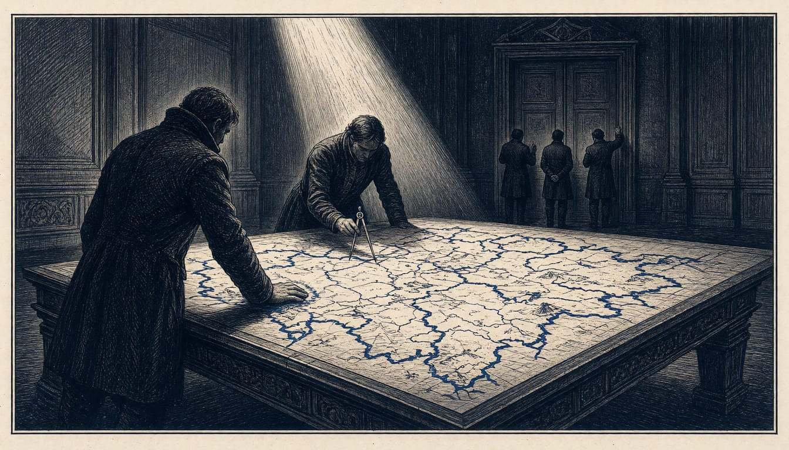

Kremlin tells Witkoff and Kushner Russia is ready to redesign European security now
The Kremlin says it wants European support for a new security architecture, yet keeps European envoys out of the Ukraine talks. Moscow and Kyiv also disagree on whether a ceasefire or a continental settlement comes first.

Vladimir Putin received US Special Envoy Steve Witkoff and Jared Kushner for talks in the Kremlin. Kremlin aide Yury Ushakov said Russia hopes European countries will support a long-term architecture of indivisible security. Moscow is ready to begin that work immediately with US representatives. So far Russia has refused to let Europeans join the Ukraine peace talks, according to Axios.
French President Emmanuel Macron said Europeans will be the ones to define and decide their own future security, adding that he has no doubt about that. The United States has asked Russia to submit a new proposal for a future agreement with Europe, including Russian steps to ease tension with the continent.
In Abu Dhabi, Kushner and Witkoff proposed that Russia draft a proposal laying out its security concerns and demands. It would name the symmetrical steps Russia is willing to take to de-escalate and reassure Europe it will not attack in the future. Kushner said the Russians have their desires and fears, but they have to provide different de-escalation proposals if they want Europe to receive those proposals in a good way.
The two sides now disagree on order. Foreign Minister Sergei Lavrov said Moscow would not agree to an immediate ceasefire without knowing what would happen next. It would be wiser, Lavrov said, to discuss the outlines of a future European security architecture first. In Abu Dhabi, negotiator Vladimir Medinsky said the whole organism is ailing and the entire organism must be treated. Volodymyr Zelenskyy told CNN the opposite: end the war first, then Ukraine's security guarantees, then any dialogue on security in Europe.
The Abu Dhabi talks of 10 and 11 November closed without a breakthrough on a ceasefire or a peace deal. Mujtaba Rahman of Eurasia Group has argued that no framework designed top down by Trump's team will substitute for credible European-wide deterrence and support for Ukraine.